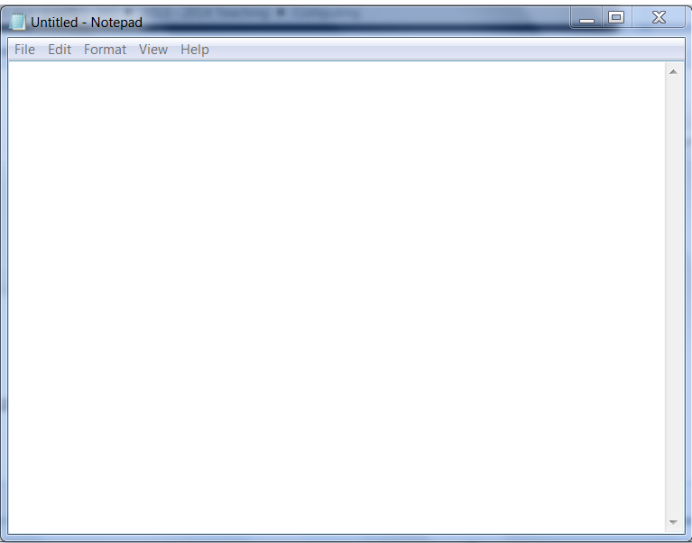

Learn to create your own webpages
Create Your First WebPage
-
Open the Notepad program.
Direction: go to open drive, then Computing 2013-2014. Double click on the file New Text Document.txt. Keep it open and proceed to the next page.
Once the file opens, you should see a blank Notepad like this:
